1First launch
The first time you open the program, pick the language and how you want to start:
- Start blank: for a new venue. That's what we'll do in this guide.
- Start with an example: a sample bar to try everything safely. You can wipe it later in Settings.
- Import Raconet data: only shown if Raconet Gastronomia or Xoriguer TPV is found on this computer.
- Open a backup: if you already have an exported .json file.
💡 Everything saves itself on every change. There's no save button to look for.
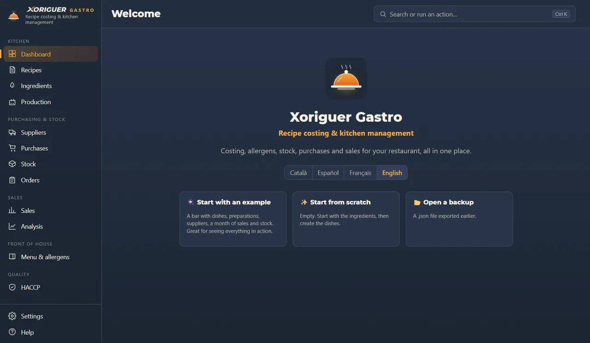
2Your venue details
Go to Settings and fill in:
- Name, address and phone: they appear on the menu, recipe cards and labels.
- Default VAT (10 % for hospitality in Spain) and the currency.
- Target margin per category: the gross margin you want on tapas, sandwiches, desserts… The program tells you whether each dish gets there and what price it would need.
- Default shelf life for production labels.
💡 Margins are worked out on the price before VAT, which is what really goes into the till.
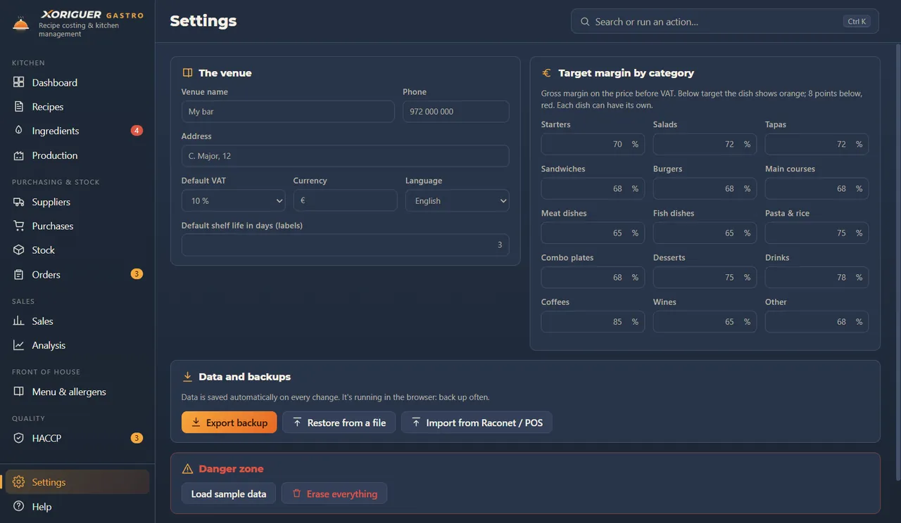
3Suppliers
In Suppliers, create one for each company that delivers to you: name, phone (for WhatsApp), email, contact person, delivery days and minimum order.
You'll then link them to ingredients and orders will be grouped by supplier, ready to send.
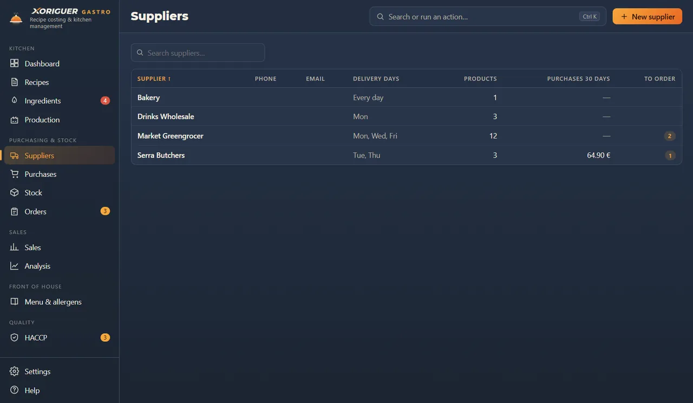
4Ingredients: start from the library
In Ingredients → Add from the library there are over 120 common products with family, yield, allergens, nutrition and a guide price already set. Tick the ones you use and press Add.
- Ones you already have are greyed out (“already added”), so nothing is duplicated.
- You can also import a supplier price list as CSV, or create them one by one with New ingredient (or the N key).
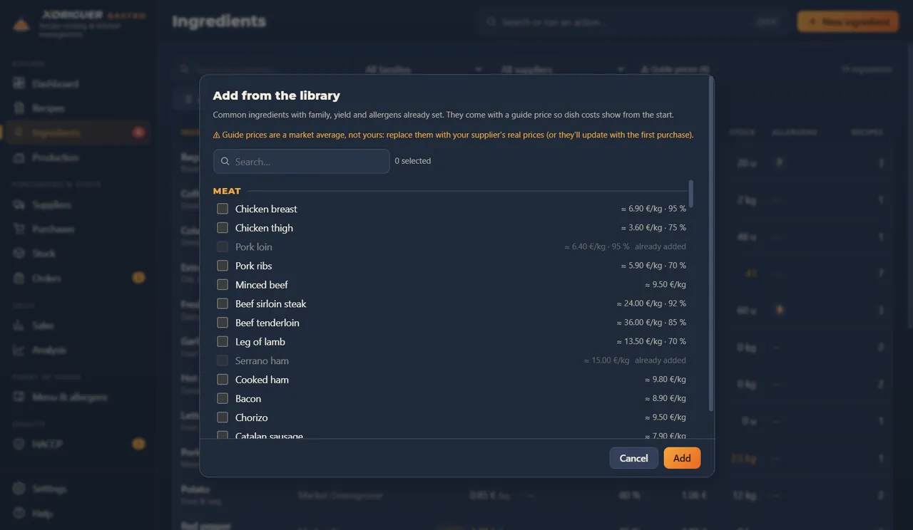
5Add the prices
Click each ingredient to open its card on the right:
- Unit and price before VAT (€/kg, €/l or €/unit). If you buy by the box, the pack calculator turns it into a price per kg.
- Yield: the usable part after cleaning (potato ≈ 80 %, hake ≈ 55 %). The real price adjusts itself.
- Weight per piece (optional): to use “2 u” in recipes for a product bought by the kg.
- Supplier, storage area (fridge, freezer…) and min/max stock for automatic orders.
- Prices by supplier: every delivery note keeps the price; if another supplier is cheaper, the dashboard tells you.
💡 Library prices are guide prices (a market average) and show in orange with a “guide” tag. Replace them with your supplier's real prices: the ⚠ Guide prices filter in the list gathers them all. If a price is already right, press The price is right. The first purchase of each product also updates it.
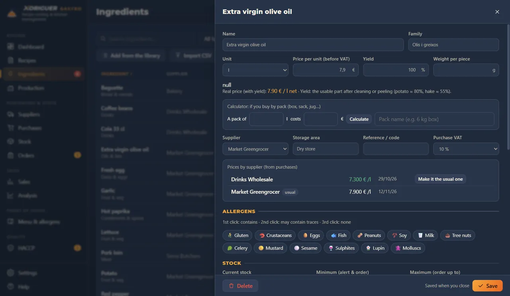
6Dishes: add them from the library
In Recipes → Add from the library there are about 70 dishes, preparations (brava sauce, aioli, béchamel, sofrito…) and bar items, each costed per portion.
- Your own ingredients are reused if you have them (even in another language) and missing ones are created.
- Preparations inside are added automatically: pick patatas bravas and you also get the brava sauce.
- Cost comes from your prices and updates itself when you change one, including inside preparations.
💡 Note: while ingredients have guide prices, the dish is marked ≈ with a warning, and its cost and margin aren't real. Enter your supplier's prices and everything updates itself. Also check the quantities and adjust them to your portions.
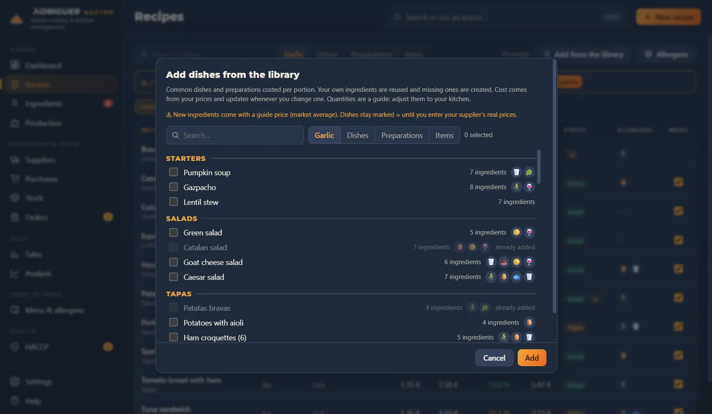
7Costing each dish
Open a dish to see and adjust its costing:
- Add ingredients or preparations by typing their name; enter the quantity per portion in any unit (g, kg, ml, l, u). If it doesn't exist, create it right there.
- Below you see the cost per portion, the food cost (green: good, orange: tight, red: low) and the margin.
- Type the price incl. VAT or press the suggested price button to hit your target margin.
- Portion sizes: tapa, half, double… each with its own price and margin.
- Station (cold kitchen, hot kitchen, fryer, bar): organises the production sheet.
- Tabs: Method (steps, photo, menu description), Allergens & nutrition (worked out for you) and Produce (scale to N portions).
- Printable recipe card, with or without costs.
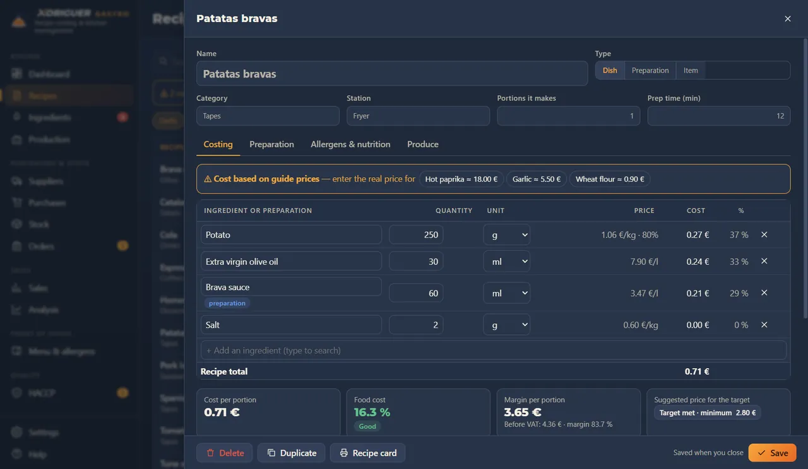
8The recipe list
The list shows at a glance each dish's cost, price, food cost, margin, status and allergens. Click any column to sort (for example by food cost, to find the dishes that earn least).
Filter by dishes, preparations or items, and by category. The Menu tick box decides whether the dish appears on the printed and digital menu.
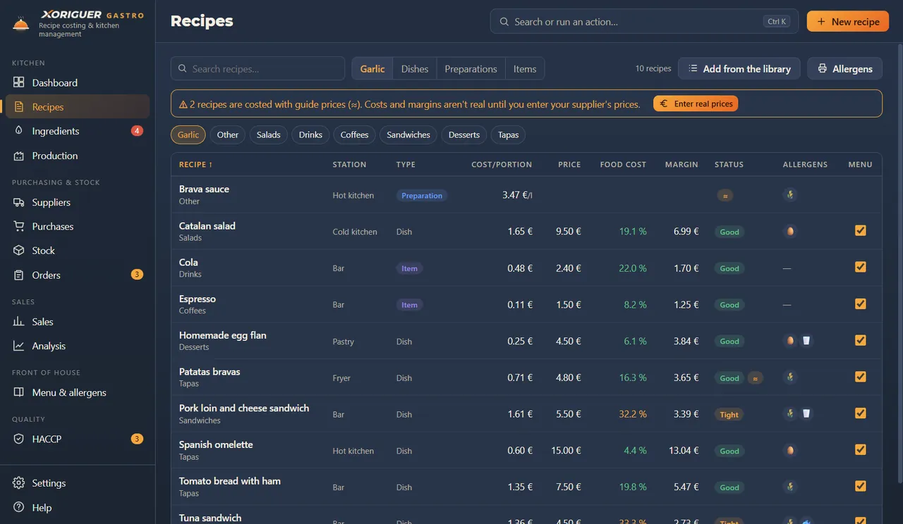
9Your first stocktake
In Stock → Do a stocktake, count what you have and type it in (Enter moves to the next). Sort it by area (fridge, freezer, dry store) to walk round in order, or print the count sheet.
Saving sets stock to your count. Do one at the start and another at the end of the month: Analysis → Actual food cost shows what you really used compared with what the recipes say.
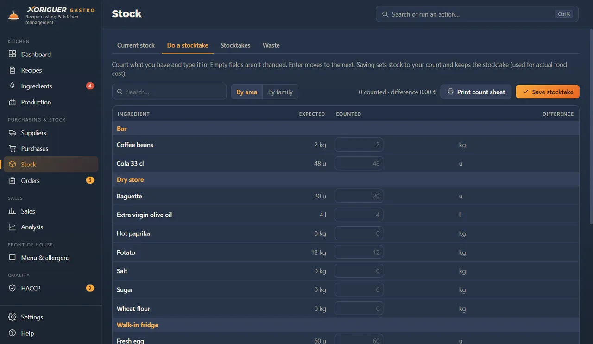
10Every day: purchases
When a delivery arrives, go to Purchases → New purchase, pick the supplier and enter the products, quantity and price.
- Stock goes up and the ingredient price updates: every dish using it is recalculated.
- If a price rises, you get an alert with the percentage.
- Bills without products (power, rent) can be logged with just the amount, for the profit & loss.
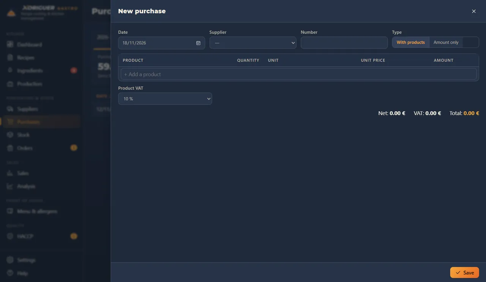
11Orders
In Orders the list builds itself from items below minimum, grouped by supplier. Adjust quantities, add anything else and send it by WhatsApp or email in one click.
When it arrives, press Arrived → delivery note and it becomes a purchase.
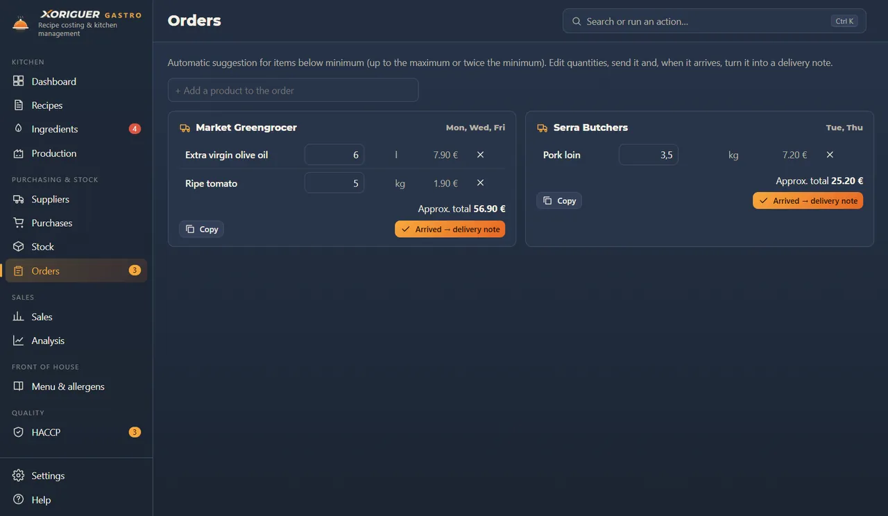
12Sales
In Sales → Enter sales log the units sold of each dish (with + and − or by typing), or import them from Xoriguer TPV or a CSV from your till.
Sales deduct stock according to the recipes (saving the same day again only deducts the difference) and feed every analysis.
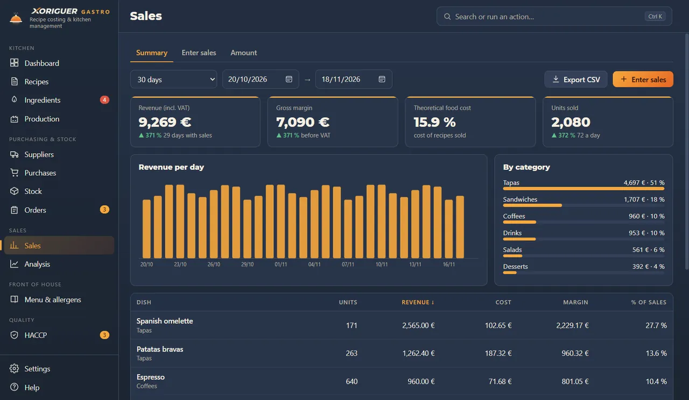
13Production
In Production choose what to prepare and how many portions (or fill it from a week of sales). You see everything you need, what you have and what's short, which you can send to the order with one button.
The printed production sheet is grouped by station, with each recipe's quantities already scaled (mise en place).
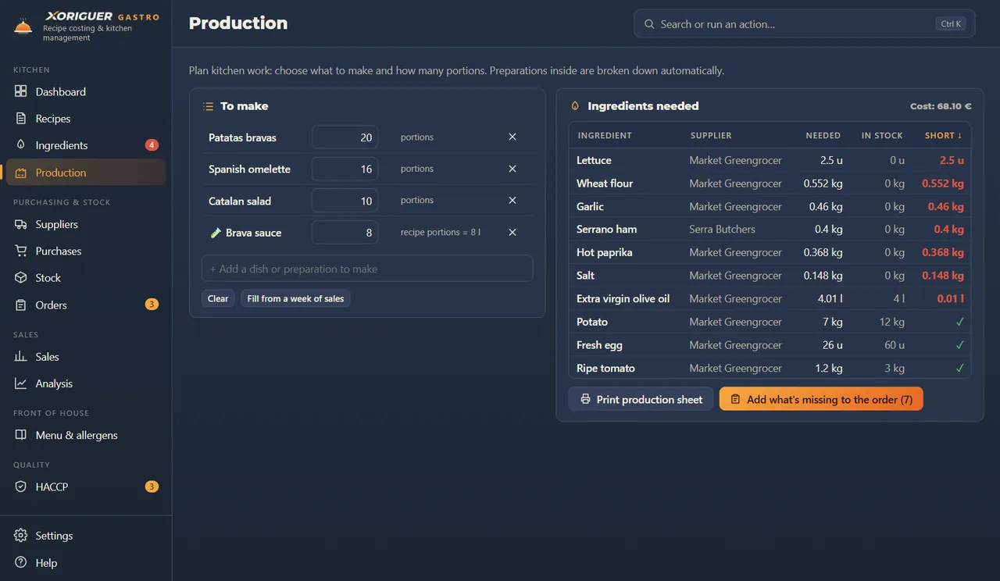
14The dashboard
The Dashboard is the home screen: 7-day sales, theoretical food cost, gross margin and stock value, the 30-day chart and the alerts: items out of stock or below minimum, price rises, dishes below target margin, ingredients without a price, a cheaper supplier, temperatures out of range…
Click an alert to jump straight to where you need to act.
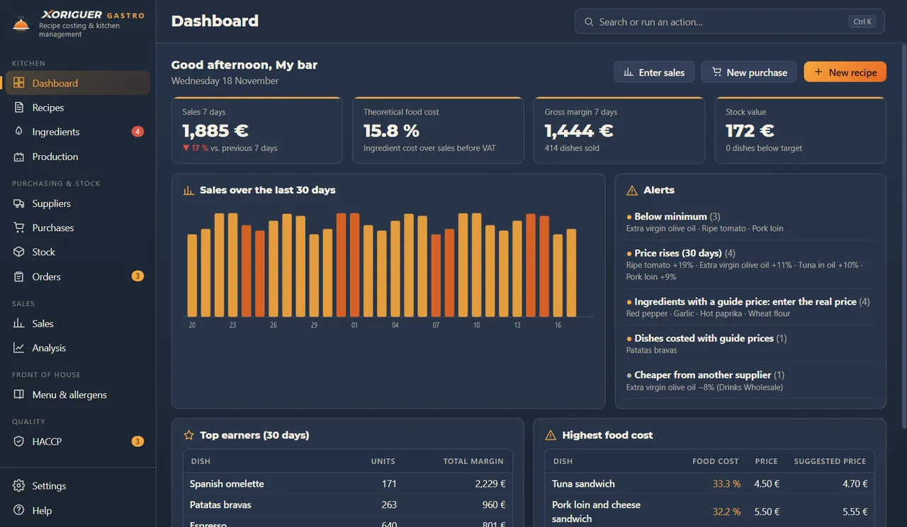
15Analysing the business
In Analysis you have:
- Menu engineering: each dish is a ⭐ star (sells well, earns well), 🐴 plowhorse, ❓ puzzle or 🐶 dog, with what to do about each.
- Actual food cost between two stocktakes, compared with theoretical: the gap is waste, over-portioning or losses.
- Price history and simulator (“if oil goes up 20 %, which dishes lose margin and what should they cost?”).
- Profit & loss with fixed costs and the break-even point.
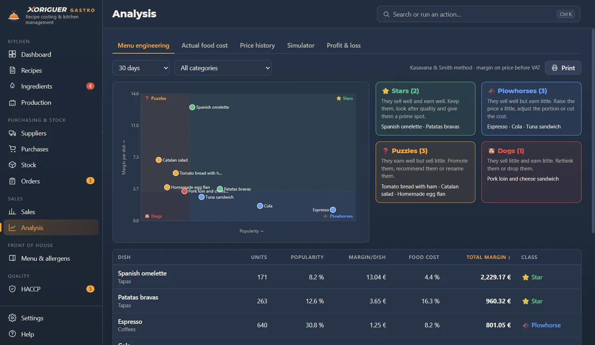
16Menu and allergens
In Menu & allergens:
- Printable menu in three styles (classic, modern, chalkboard), with allergens and descriptions.
- 14-allergen matrix (EU Regulation 1169/2011), mandatory and worked out from the recipes.
- QR menu: save the digital menu (a mobile page in 4 languages with an allergen filter), upload it to your website and print QR cards for the tables.
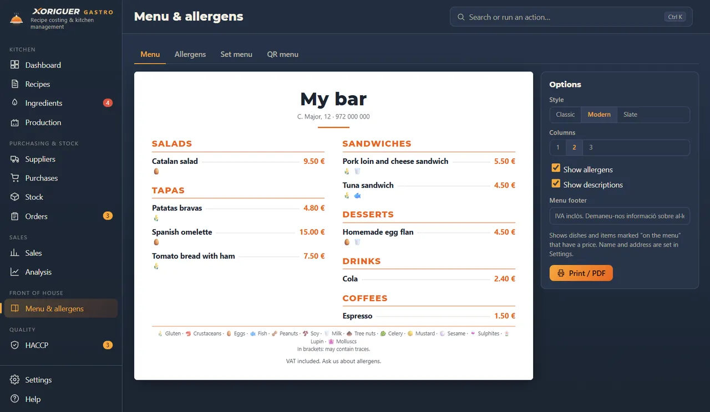
17Set menu
In Set menu enter the starters, mains and desserts (or pick them from your recipes) and the price. If a name matches a recipe, the program works out the cost per guest, food cost, margin and suggested price.
Enter how many guests you expect and press Add to production: you'll know what to prepare and buy. Print it for the chalkboard or the tables.
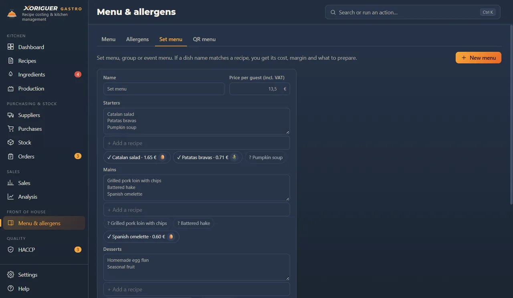
18HACCP
In HACCP log fridge and freezer temperatures every day (if one is out of range, you're asked for the corrective action), print the monthly log for inspections and make production labels with date, use-by, batch and allergens.
In the Equipment tab add each fridge with its correct range.
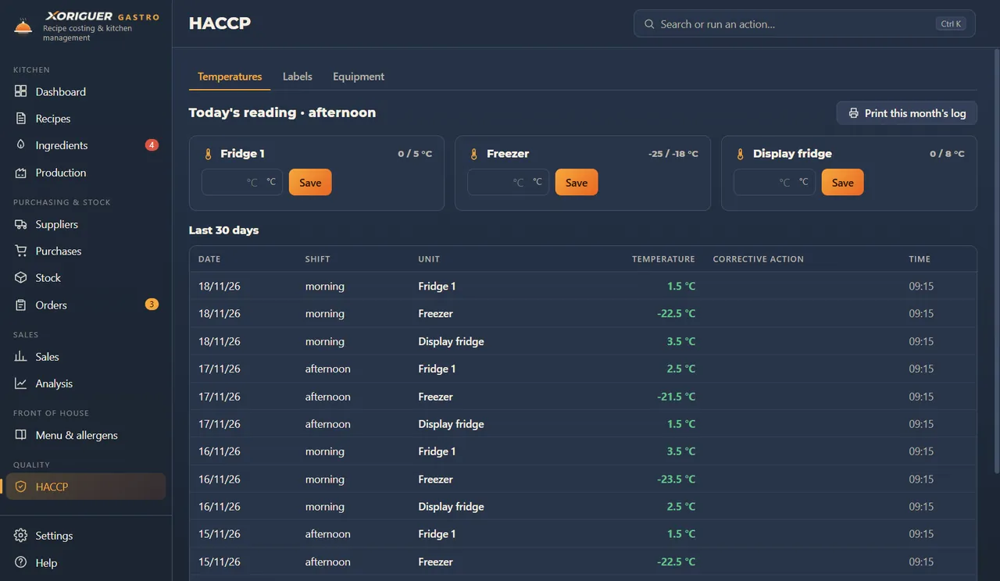
19Shortcuts to go faster
- Ctrl + K: find any dish, ingredient or supplier, or run an action (“do a stocktake”, “new purchase”…).
- N: create a new item on the current screen. /: jump to search.
- Ctrl + Z: undo the last change (also from the notice at the bottom right).
- Ctrl + 1…9: switch screen. Esc: close the panel.
- Data lives in %APPDATA%\XoriguerGastro with an automatic daily backup (30 days). In Settings you can export or restore one.
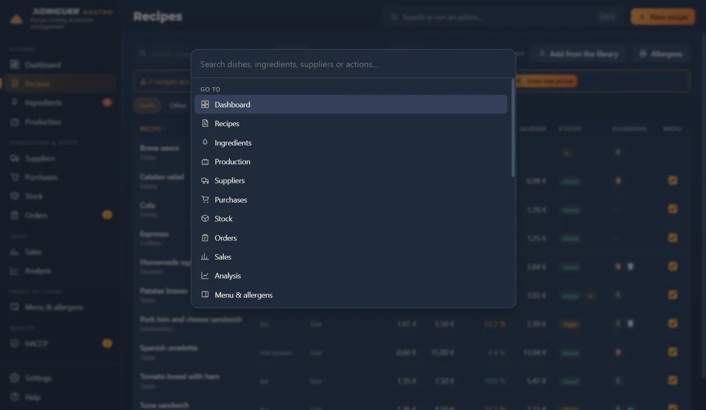
✓Checklist
- Name, address, VAT and target margins in Settings
- Suppliers created
- Ingredients added from the library or a CSV, with price, supplier and minimum stock
- Dishes added from the library or created, with quantities checked and prices set
- Allergens checked (printed matrix on display for guests)
- First stocktake done
- Fridges and freezers set up in HACCP
- Printed menu and/or digital menu with QR on the tables